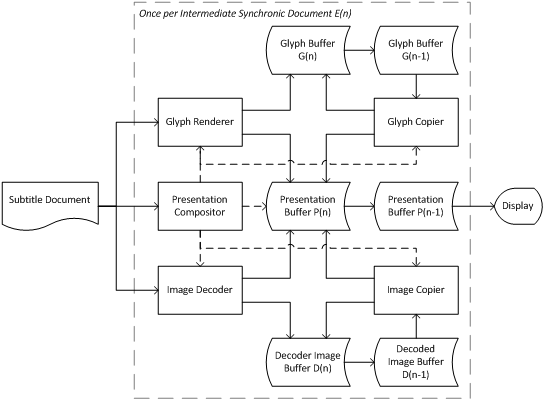
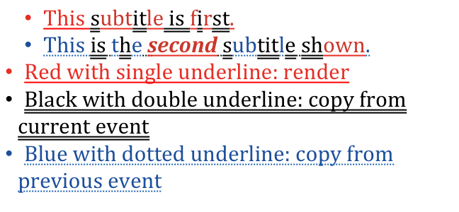
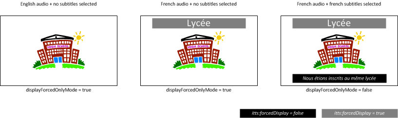

This document specifies two profiles of [TTML1]: a text-only profile and an image-only profile. These profiles are
intended to be used across subtitle and caption delivery applications worldwide, thereby simplifying interoperability,
consistent rendering and conversion to other subtitling and captioning formats. The text profile is a superset of
[SDPUS].
This section describes the status of this document at the time of its publication.
Other documents may supersede this document. A list of current W3C publications and the
latest revision of this technical report can be found in the W3C technical reports index at
http://www.w3.org/TR/.
This document was published by the Timed Text Working Group as a First Public Working Draft.
This document is intended to become a W3C Recommendation.
If you wish to make comments regarding this document, please send them to
public-tt@w3.org
(subscribe,
archives)
with [imsc] at the start of your email's subject.
All comments are welcome.
Publication as a First Public Working Draft does not imply endorsement by the W3C
Membership. This is a draft document and may be updated, replaced or obsoleted by other
documents at any time. It is inappropriate to cite this document as other than work in
progress.
This document specifies two profiles of [TTML1]: a text-only profile and an image-only profile. These profiles are
intended for subtitle and caption delivery worldwide, including dialog language translation, content description, captions for
deaf and hard of hearing, etc.
The text-only profile is a strict superset of [SDPUS] and the image-only profile uses extensions specified in
[ST2052-1].
2. Terms and Definitions
Presentation processor. See Section 2.2 at [TTML1].
Transformation processor. See Section 2.2 at [TTML1].
3. Conformance
As well as sections marked as non-normative, all authoring guidelines, diagrams, examples,
and notes in this specification are non-normative. Everything else in this specification is
normative.
The key words MUST, MUST NOT, REQUIRED, SHOULD, SHOULD NOT, RECOMMENDED, MAY,
and OPTIONAL in this specification are to be interpreted as described in [RFC2119].
A subtitle document that conforms to a profile defined herein SHALL satisfy all normative provisions specified by the
profile.
A presentation processor that conforms to a profile defined in this specification SHALL:
satisfy the Generic Processor Conformance requirements at Section 3.2.1 of [TTML1];
satisfy all normative provisions specified by the profile; and
be capable of presenting any subtitle document that conforms to the profile, i.e. if it implements all features and
provisions of the profile.
satisfy the Generic Processor Conformance requirements at Section 3.2.1 of [TTML1];
satisfy all normative provisions specified by the profile; and
be capable of transforming any subtitle document that conforms to the profile, i.e. if it implements all features and
provisions of the profile.
Note
The use of the term presentation processor (transformation processor) within this specification
does not imply conformance to the DFXP Presentation Profile (DFXP Transformation Profile) specified in [TTML1]. In other
words, it is not considered an error for a presentation processor (transformation processor) to conform to a
profile defined in this specification without also conforming to the DFXP Presentation Profile (DFXP Transformation
Profile).
4. Profiles
4.1 General
A subtitle document SHALL NOT conform to the Text and Image Profiles simultaneously.
In applications that require subtitle/caption content in image form to be simultaneously available in text form, two
distinct subtitle documents, one conforming to the Text Profile and the other conforming to the Image Profile, SHOULD be
offered. In addition, the Text Profile subtitle document SHOULD be associated with the Image Profile subtitle document such
that, when image content is encountered, assistive technologies have access to its corresponding text form.
Note
The ittm:altText element specified 5.5.4ittm:altText also allows text equivalent
string to be associated with an image, e.g. to support indexation of the content and also facilitate quality checking of the
document during authoring.
Annex C.WCAG Considerations specifically discusses this specification in the context of the [WCAG20]
guidelines.
The namespace prefix values defined above are for convenience and document instances may use any prefix value that
conforms to [xml-names].
5.3 Related Video Object
A subtitle document MAY be associated with a related video object, which SHALL consist of a sequence of image frames, each
a rectangular array of pixels, and SHALL be considered the Related Media Object defined in [TTML1].
5.4 Synchronization
Each intermediate synchronic document of the subtitle document is intended to be displayed on a specific frame and removed
on a specific frame of the related video object.
When mapping a media time expression M to a frame F of a related video object, e.g. for the purpose of rendering a
subtitle document onto the related video object, the presentation processorSHALL map M to the frame F with the
presentation time that is the closest to, but not less, than M.
Note
In typical scenario, the same video program (the related video object) will be used for subtitle document
authoring, delivery and user playback. The mapping from media time expression to related video object above allows the author
to precisely associate subtitle video content with video frames, e.g. around scene transitions. In circumstances where the
video program is downsampled during delivery, the application can specify that, at playback, the relative video object be
considered the delivered video program upsampled to is original rate, thereby allowing subtitle content to be rendered at the
same temporal locations it was authored.
If ttp:frameRate is specified, then the product of ttp:frameRate and
ttp:frameRateMultiplierSHALL be the frame rate of the related video object.
Note
A document can be made independent of the frame rate of the related video object by never using the
frames term in a time expression: as specified in 5.8Features, ttp:frameRate is
required only if the document includes one or more time expressions that uses the frames term.
5.5 Extensions
5.5.1 ittp:aspectRatio
The ittp:aspectRatio attributes allows authorial control of the mapping of the root container of a subtitle
document to the related video object frame.
The root container of a subtitle document SHALL be mapped to the related video object frame according to the
following:
If ittp:aspectRatio is present, the root container SHALL be mapped to a rectangular area within the
related video object such that:
the aspect ratio of the rectangular area is equal to ittp:aspectRatio,
the center of the rectangular area is colocated with the center of the related video object frame,
the rectangular area (including its boundary) is entirely within the related video object frame (including its
boundary), and
the rectangular area has a height or width equal to that of the related video object frame.
Otherwise, the root container of a subtitle document SHALL be mapped to the related video object frame in its
entirety. If tts:extent is present on the tt element, the extents of the root container SHALL
be equal to the dimensions of the related video object frame.
ittp:aspectRatioSHALL NOT be present if tts:extent is present.
Note
As specified in Section 5.8Features, tts:extent is present if the
px length measure is used anywhere within the document.
Integer pixel positions on the related video object frame computed from real percentage length values SHALL use half-up
rounding, i.e. round(x) = floor(x+0.5).
5.5.2 ittp:progressivelyDecodable
A progressively decodable subtitle document is structured to facilitate presentation before the document is received in
its entirety, and can be identified using ittp:progressivelyDecodable attribute.
A progressively decodable subtitle document is a subtitle document that conforms to the following:
no attribute or element of the TTML timing vocabulary is present within the head element;
given two of its Intermediate Synchronic Documents A and B with start times TA and TB, respectively, TA is not
greater than TB if A includes a p element that occurs earlier in the document than any p element
that B includes;
no attribute of the TTML timing vocabulary is present on a child element of p; and
no element E1 explicitly references, e.g. using xml:id, another element E2 where the opening tag of E2 occurs after the opening tag of E1.
If present, the ittp:progressivelyDecodable attribute SHALL conform to the following syntax:
ittp:progressivelyDecodable
: "true"
| "false"
An ittp:progressivelyDecodable attribute is considered to be significant only when specified on the
tt element.
If not specified, the value of ittp:progressivelyDecodableSHALL be considered to be equal to "false".
A subtitle document for which the computed value of ittp:progressivelyDecodable is "true" SHALL be a
progressively decodable subtitle document.
A subtitle document for which the computed value of ittp:progressivelyDecodable is "false" is neither
asserted to be a progressively decodable subtitle document nor asserted not to be a progressively decodable subtitle
document.
Note
The placement and use of div, region and span that contain time
attributes, and the use of set are constrained when ittp:progressivelyDecodable="true" .
5.5.3 itts:forcedDisplay
itts:forcedDisplay allows the processor to override the computed value of tts:visibility
attribute in conjunction with an application parameter displayForcedOnlyMode.
If the value of displayForcedOnlyMode is "true", a content element with a itts:forcedDisplay
computed value of "false" SHALL not produce any visible rendering, but still affect layout, regardless of the computed
value of tts:visibility.
The itts:forcedDisplay attribute shall conform to the following:
Values:
false | true
Initial:
false
Applies to:
body, div, p, region, span
Inherited:
yes
Percentages:
N/A
Animatable:
discrete
Annex B.Forced content (non-normative) illustrates the use of itts:forcedDisplay in an application in which a
single document contains both hard of hearing captions and translated foreign language subtitles, using
itts:forcedDisplay to display translation subtitles always, independently of whether the hard of hearing
captions are displayed or hidden.
The presentation processorSHALL accept an optional boolean parameter called displayForcedOnlyMode,
whose value MAY be set by a context external to the presentation processor. If not set, the value of
displayForcedOnlyModeSHALL be assumed to be equal to "false".
The algorithm for setting the displayForcedOnlyMode parameter based on the circumstances under which the
subtitle document is presented is left to the application.
Note
The background of a region is drawn even if the computed value of tts:visibility equals
"hidden" for all active content within. This can occur if itts:forcedDisplay equals "false" for all active
content elements within a region for which itts:forcedDisplay equals "true", and
displayForcedOnlyMode equals "true". Authors can avoid this situation, for instance, by ensuring that content
elements and the regions that they are flowed into always have the same value of itts:forcedDisplay.
Note
Although itts:forcedDisplay, like all the TTML style attributes, has no defined semantics on a
br content element, itts:forcedDisplay will apply to a br content element if it is
either defined on an ancestor content element of the br content element or it is applied to a region element
corresponding to a region that the br content element is being flowed into.
Note
It is expected that the functionality of itts:forcedDisplay will be mapped to a conditional
style construct in a future revision of this specification.
5.5.4 ittm:altText
ittm:altText allows an author to provide a text string equivalent for an element, typically an image. This
text equivalent MAY be used to support indexation of the content and also facilitate quality checking of the document
during authoring.
The ittm:altText element SHALL conform to the following syntax:
<ittm:altText
xml:id = ID
xml:lang = string
xml:space = (default|preserve)
{any attribute not in the default namespace, any TT namespace or any IMSC 1.0 namespace}>
Content: #PCDATA
</ittm:altText>
In contrast to the common use of alt attributes in [HTML5], the ittm:altText
attribute content is not intended to be displayed in place of the element if the element is not loaded. The
ittm:altText attribute content can however be read and used by assistive technologies. .
5.6 Region
5.6.1 Presented Region
A presented region is a temporally active region that satisfies the following conditions:
the computed value of tts:opacity is not equal to "0.0"; and
the computed value of tts:display is not "none"; and
the computed value of tts:visibility is not "hidden"; and
either (a) content is selected into the region or (b) the computed value of tts:showBackground is equal to "always"
and the computed value of tts:backgroundColor has non-transparent alpha.
5.6.2 Dimensions and Position
All regions SHALL NOT extend beyond the root container, i.e. the intersection of the sets of coordinates belonging to a
region (including its boundary) and the sets of coordinates belonging to the root container (including its boundary) is the
set of coordinates belonging to the region (including its boundary).
No two presented regions in a given intermediate synchronic document SHALL overlap, i.e. the intersection of the sets of
coordinates within each region (including its boundary) is empty.
5.6.3 Maximum number
The number of presented regions in a given intermediate synchronic document SHALL NOT be greater than 4.
5.7 Hypothetical Render Model
Any sequence of consecutive intermediate synchronic documents SHALL be reproducible without error by the Hypothetical
Render Model specified in Section 8.Hypothetical Render Model.
5.8 Features
Unless specified otherwise,a subtitle document SHALL conform to the following:
Feature
Provisions
Relative to the TT Feature namespace
#animation
MAY be used.
#cellResolution
SHALL NOT be used.
#clockMode
SHALL NOT be used.
#content
MAY be used.
#core
MAY be used.
#display-block
MAY be used.
#display-inline
MAY be used.
#display-region
MAY be used.
#display
MAY be used.
#dropMode
SHALL NOT be used.
#extent-region
MAY be used. The tts:extent attribute SHALL be present on all region elements.
#extent-root
MAY be used. If the document includes any length value that uses the px expression,
tts:extentSHALL be present on the tt element.
#extent
MAY be used.
#frameRate
If the document includes any time expression that uses the frames term, the ttp:frameRate
attribute SHALL be present on the tt element.
#frameRateMultiplier
MAY be used.
#layout
MAY be used.
#length-cell
SHALL NOT be used.
#length-integer
MAY be used.
#length-negative
SHALL NOT be used.
#length-percentage
MAY be used.
#length-pixel
MAY be used.
#length-positive
MAY be used.
#length-real
MAY be used.
#length
MAY be used.
#markerMode
SHALL NOT be used.
#metadata
MAY be used.
#opacity
MAY be used.
#origin
MAY be used.
#overflow
SHALL NOT be used.
#pixelAspectRatio
SHALL NOT be used.
#presentation
MAY be used.
#profile
MAY be used.
#showBackground
MAY be used.
#structure
MAY be used.
#styling-chained
MAY be used.
#styling-inheritance-content
MAY be used.
#styling-inheritance-region
MAY be used.
#styling-inline
MAY be used.
#styling-nested
MAY be used.
#styling-referential
MAY be used.
#styling
MAY be used.
#subFrameRate
SHALL NOT be used.
#tickRate
MAY be used. ttp:tickRateSHALL be present on the tt element if the
#time-offset-with-ticks feature is used in the document.
#timeBase-clock
SHALL NOT be used.
#timeBase-media
SHALL be used. ttp:timeBaseSHALL be present on the tt element and SHALL be equal to
"media".
#timeBase-smpte
SHALL NOT be used.
#time-clock-with-frames
MAY be used.
#time-clock
MAY be used.
#time-offset-with-frames
MAY be used.
#time-offset-with-ticks
MAY be used.
#time-offset
MAY be used.
#timeContainer
MAY be used.
#timing
MAY be used. The same syntax of #clock-time or #offset-timeSHOULD be used throughout the
subtitle document.
#transformation
MAY be used.
#unicodeBidi
MAY be used.
#visibility-block
MAY be used.
#visibility-inline
MAY be used.
#visibility-region
MAY be used.
#visibility
MAY be used.
#writingMode-horizontal-lr
MAY be used.
#writingMode-horizontal-rl
MAY be used.
#writingMode-horizontal
MAY be used.
#writingMode
MAY be used.
#zIndex
MAY be used.
Extension
Provisions
Relative to the IMSC 1.0 Extension namespace
#aspectRatio
MAY be used.
#forcedDisplay
MAY be used.
#progressivelyDecodable
MAY be used.
#altText
MAY be used.
Note
As specified in [TTML1], a #time-offset-with-frames expression is translated to a media time
M according to M = 3600 · hours + 60 · minutes + seconds + (frames ÷ (ttp:frameRateMultiplier ·
ttp:frameRate)).
6. Text Profile Constraints
6.1 Profile Designator
A subtitle document conforming to the Text Profile SHALL be associated with the following profile designator:
The subtitle document SHALL conform to the following, where URI Fragments are relative to the TT Feature namespace:
Feature
Provisions
Relative to the TT Feature namespace
#backgroundColor-block
MAY be used.
#backgroundColor-inline
MAY be used.
#backgroundColor-region
MAY be used.
#backgroundColor
MAY be used.
#bidi
MAY be used.
#color
MAY be used. The initial value of tts:colorSHALL be "white". NOTE: This is consistent with
[ST2052-1].
#direction
MAY be used.
#displayAlign
MAY be used. The initial value of tts:displayAlignSHALL be "after" for the default region. NOTE: This
is consistent with [ST2052-1].
#extent-region
The tts:extent attribute when applied to a region element SHALL use px units or
"percentage" representation, and SHALL NOT use em units.
#fontFamily-generic
MAY be used. A tts:fontFamily of either "monospaceSerif" or "proportionalSansSerif" SHOULD be
specified for all presented text content. A tts:fontFamily of "default" SHALL be equivalent to "monospaceSerif".
#fontFamily-non-generic
MAY be used.
#fontFamily
MAY be used.
#fontSize-anamorphic
SHALL NOT be used.
#fontSize-isomorphic
MAY be used.
#fontSize
MAY be used.
#fontStyle-italic
MAY be used.
#fontStyle-oblique
MAY be used.
#fontStyle
MAY be used.
#fontWeight-bold
MAY be used.
#fontWeight
MAY be used.
#length-em
MAY be used.
#lineBreak-uax14
MAY be used.
#lineHeight
MAY be used.
An explicit <length>SHOULD be specified as there is no uniform implementation of the "normal" value
at the time of this writing.
#nested-div
MAY be used.
#nested-span
MAY be used.
#origin
The tts:origin attribute SHALL use px units or "percentage" representation, and SHALL NOT
use em units.
#padding-1
MAY be used.
#padding-2
MAY be used.
#padding-3
MAY be used.
#padding-4
MAY be used.
#padding
MAY be used.
#textAlign-absolute
MAY be used.
#textAlign-relative
MAY be used.
#textAlign
MAY be used. The initial value of tts:textAlignSHALL be "center" for the default region. NOTE: This
is consistent with [ST2052-1].
#textDecoration-over
MAY be used.
#textDecoration-through
MAY be used.
#textDecoration-under
MAY be used.
#textDecoration
MAY be used.
#textOutline-blurred
SHALL NOT be used.
#textOutline-unblurred
MAY be used.
#textOutline
MAY be used. If specified, the border thickness SHALL be 10% or less than the associated font size.
#wrapOption
MAY be used.
#writingMode-vertical
MAY be used.
Extension
Provisions
Relative to the SMPTE-TT Extension Namespace
#image
SHALL NOT be used.
7. Image Profile Constraints
7.1 Profile Designator
A subtitle document conforming to the Image Profile SHALL be associated with the following profile designator:
Profile Name
Profile Designator
IMSC 1.0 Image
http://www.w3.org/ns/ttml/profile/imsc1/image
7.2 Presented Image
7.2.1 Definition
A presented image is a div element with a smpte:backgroundImage attribute that does not extend
beyond a presented region.
7.2.2 Number per Region
In a given synchronic document, there shall be at most one presented image per presented region.
7.3 div element
If a smpte:backgroundImage attribute is applied to a div element:
the width and height of the region extent associated with the div element SHALL be specified and SHALL be
equal to the width and height of the image source referenced by the smpte:backgroundImage;
the metadata element of the div element SHOULD contain an instance of
ittm:altText that is a verbatim text equivalent of the image referenced by the
smpte:backgroundImage attribute; and
The smpte:backgroundImage attribute SHALL reference a complete image that conforms to the PNG image coding
as specified in Sections 7.1.1.3 and 15.1 of [MHP]. If a pHYs chunk is present, it SHALL indicate square pixels. Note:
If no pixel aspect ratio is carried, the default of square pixels is assumed.
7.4 Features
The features included in a subtitle document SHALL conform to the Table below, where URI Fragments are relative to the TT
Feature namespace:
Feature
Provisions
Relative to the TT Feature namespace
#bidi
SHALL NOT be used.
#color
SHALL NOT be used.
#content
The p, span and br elements SHALL NOT be present.
#direction
SHALL NOT be used.
#displayAlign
SHALL NOT be used.
#fontFamily
SHALL NOT be used.
#fontSize
SHALL NOT be used.
#fontStyle
SHALL NOT be used.
#fontWeight
SHALL NOT be used.
#length-em
SHALL NOT be used.
#lineBreak-uax14
SHALL NOT be used.
#lineHeight
SHALL NOT be used.
#nested-div
SHALL NOT be used.
#nested-span
SHALL NOT be used.
#padding
SHALL NOT be used.
#textAlign
SHALL NOT be used.
#textDecoration
SHALL NOT be used.
#textOutline
SHALL NOT be used.
#wrapOption
SHALL NOT be used.
#writingMode-vertical
SHALL NOT be used.
Extension
Provisions
Relative to the SMPTE-TT Extension namespace
#image
smpte:backgroundImageMAY be used. smpte:backgroundImageHorizontal and smpte:backgroundImageVerticalSHALL NOT be used. smpte:imageSHALL NOT be used.
The purpose of the model is to limit subtitle document complexity. It is not intended as a specification of the
processing requirements for implementations. For instance, while the model defines a glyph buffer for the purpose of
limiting the number of glyphs displayed at any given point in time, it neither requires the implementation of such a
buffer, nor models the sub-pixel character positioning and anti-aliased glyph rendering that can be used to produce text
output.

Fig. 1
Hypothetical Render Model
The model operates on successive intermediate synchronic documents obtained from an input subtitle document, and uses a
simple double buffering model: while an intermediate synchronic document En is being painted into Presentation
Buffer Pn (the "front buffer" of the model), the previous intermediate synchronic document En-1 is
available for display in Presentation Buffer Pn-1 (the "back buffer" of the model).
The model specifies an (hypothetical) time required for completely painting an intermediate synchronic document as a
proxy for complexity. Painting includes drawing region backgrounds, rendering and copying glyphs, and decoding and copying
images. Complexity is then limited by requiring that painting of intermediate synchronic document En completes
before the end of intermediate synchronic document En-1.
Whenever applicable, constraints are specified relative to root container dimensions, allowing subtitle sequences to be
authored independently of related video object resolution.
To enables scenarios where the same glyphs are used in multiple successive intermediate synchronic documents, e.g. to
convey a CEA-608/708-style roll-up (see [CEA-608] and [CEA-708]), the Glyph Buffers Gn and Gn-1
store rendered glyphs across intermediate synchronic documents, allowing glyphs to be copied into the Presentation Buffer
instead of rendered, a more costly operation.
Similarly, Decoded Image Buffers Dn and Dn-1 store decoded images across intermediate synchronic
documents, allowing images to be copied into the Presentation Buffer instead of decoded.
8.1.2 General
The Presentation Compositor SHALL render in Presentation Buffer Pn each successive intermediate synchronic
document En using the following steps in order:
clear the pixels, except for the first intermediate synchronic document E0 for the which the pixels of
P0SHALL be assumed to have been cleared;
paint, according to stacking order, all background pixels for each region;
paint all pixels for background colors associated with text or image subtitle content; and
paint the text or image subtitle content.
The Presentation Compositor SHALL start rendering En:
at the presentation time of E0 minus Initial Painting Delay (IPD), if n = 0
at the presentation time of En-1, if n > 0
The duration DUR(En) for painting an intermediate synchronic document En in the Presentation
Buffer PnSHALL be:
DUR(En) = S(En) / BDraw + DURT(En) + DURI(En)
Where:
S(En) is the total normalized drawing area for intermediate synchronic document En, as
specified in 8.1.3Paint Regions
BDraw is the normalized background drawing performance factor.
DURT(En) is the duration, in seconds, for painting the text subtitle content for intermediate
synchronic document En, as specified in Section 8.1.5Paint Text
DURI(En) is the duration, in seconds, for painting the image subtitle content for intermediate
synchronic document En, as specified in Section 8.1.4Paint Images
The contents of the Presentation Buffer PnSHALL be transferred instantaneously to Presentation Buffer
Pn-1 at the presentation time of intermediate synchronic document En, making the latter available for
display.
Note
It is possible for the contents of Presentation Buffer Pn-1 to never be displayed. This can
happen if Presentation Buffer Pn is copied twice to Presentation Buffer Pn-1 between two consecutive
video frame boundaries of the related video object.
It SHALL be an error for the Presentation Compositor to fail to complete painting pixels for En before the
presentation time of En.
Unless specified otherwise, the following table SHALL specify values for IPD and BDraw.
BDraw effectively sets a limit on fillings regions - for example, assuming that the root container is
ultimately rendered at 1920×1080 resolution, a BDraw of 12 s-1 would correspond to a fill rate of
1920×1080×12/s=23.7×220pixels s-1.
Note
IPD effectively sets a limit on the complexity of any given intermediate synchronic document.
8.1.3 Paint Regions
The total normalized drawing area S(En) for intermediate synchronic document EnSHALL be
S(En) = CLEAR(En) + PAINT(En )
where CLEAR(E0) = 0 and CLEAR(En | n > 0) = 1, i.e. the root container in its entirety.
Note
To ensure consistency of the Presentation Buffer, a new intermediate synchronic document requires clearing
of the root container.
PAINT(En) SHALL be the normalized area to be painted for all regions that are used in intermediate synchronic
document En according to
PAINT(En) = ∑Ri∈Rp SIZE(Ri) ∙ NBG(Ri)
where R_p SHALL be the set of regions presented in the intermediate synchronic document En – see Section
5.6.1Presented Region for the definition of presented region.
NSIZE(Ri) SHALL be given by:
NSIZE(Ri) = (width of Ri ∙ height of Ri ) ÷ (root container height ∙ root
container width)
NBG(Ri) SHALL be the total number of tts:backgroundColor attributes associated with the given
region Ri in the intermediate synchronic document. A tts:backgroundColor attribute is associated
with a region when it is explicitly specified (either as an attribute in the element, or by reference to a declared style)
in the following circumstances:
It is specified on the region layout element that defines the region.
It is specified on a div, p, span or br content element that is
to be flowed into the region for presentation in the intermediate synchronic document (see [TTML1] for more details on
when a content element is followed into a region).
It is specified on a set animation element that is to be applied to content elements that are to be
flowed into the region for presentation in the intermediate synchronic document (see [TTML1] for more details on when
a set animation element is applied to content elements).
Even if a specified tts:backgroundColor is the same as specified on the nearest ancestor content element or
animation element, specifying any tts:backgroundColorSHALL require an additional fill operation for all
region pixels.
8.1.4 Paint Images
The Presentation Compositor SHALL paint into the Presentation Buffer Pn all visible pixels of presented
images of intermediate synchronic document En.
For each presented image, the Presentation Compositor SHALL either:
if an identical image is present in Decoded Image Buffer Dn, copy the image from Decoded Image Buffer
Dn to the Presentation Buffer Pn using the Image Copier; or
if an identical image is present in Decoded Image Buffer Dn-1, i.e. an identical image was present in
intermediate synchronic document En-1, copy using the Image Copier the glyph from Decoded Image Buffer
Dn-1 to both the Decoded Image Buffer Dn and the Presentation Buffer Pn; or
Otherwise, decode the image using the Image Decoder the image into the Presentation Buffer Pn and Decoded
Image Buffer Dn.
Two images SHALL be identical if and only if they reference the same encoded image source.
The duration DURI(En) for painting images of an intermediate synchronic document En in
the Presentation Buffer SHALL be as follows:
DURI(En) = ∑Ii ∈ Ic NRGA(Ii) / ICpy +
∑Ij ∈ Id NSIZ(Ij) / IDec
where
Ic is the set of images copied when painting intermediate synchronic document En
Id is the set of images decoded when painting intermediate synchronic document En
IDec is the image decoding rate
ICpy is the normalized image copy performance factor.
NRGA(Ii) is the Normalized Image Area of presented image Ii and SHALL be equal to:
NRGA(Ii)= (width of Ii ) ∙ height of Ii ) ÷ ( root container height ∙ root
container width )
NSIZ(Ii) SHALL be the number of pixels of presented image Ii.
The contents of the Decoded Image Buffer DnSHALL be transferred instantaneously to Decoded Image Buffer
Dn-1 at the presentation time of intermediate synchronic document En.
The total size occupied by images stored in Decoded Image Buffers Dn or Dn-1SHALL be the sum of
their Normalized Image Area.
The size of Decoded Image Buffers Dn or Dn-1SHALL be the Normalized Decoded Image Buffer Size
(NDIBS).
Unless specified otherwise, the following table SHALL specify ICpy, Idec, and NDBIS.
Parameter
Initial value
Normalized image copy performance factor (ICpy)
6
Image Decoding rate (Idec)
1 × 220 pixels s-1
Normalized Decoded Image Buffer Size (NDIBS)
0.9885
8.1.5 Paint Text
For each glyph displayed in intermediate synchronic document En, the Presentation Compositor SHALL:
if an identical glyph is present in Glyph Buffer Gn, copy the glyph from Glyph Buffer Gn to the
Presentation Buffer Pn using the Glyph Copier; or
if an identical glyph is present in Glyph Buffer Gn-1, i.e. an identical glyph was present in intermediate
synchronic document En-1, copy using the Glyph Copier the glyph from Glyph Buffer Gn-1 to both the
Glyph Buffer Gn and the Presentation Buffer Pn; or
Otherwise render using the Glyph Renderer the glyph into the Presentation Buffer Pn and Glyph Buffer
Gn using the corresponding style information.
Two glyphs are identical if and only if the following [TTML1] styles are identical:
tts:color
tts:fontFamily
tts:fontSize
tts:fontStyle
tts:fontWeight
tts:textDecoration
tts:textOutline

Fig. 2
Example of Presentation Compositor Behavior for Text Rendering
The duration DURT(En) for painting the text of an intermediate synchronic document En
in the Presentation Buffer is as follows:
Gr is the set of glyphs rendered into the Presentation Buffer Pn using the Glyph Renderer in
intermediate synchronic document En.
Gc is the set of glyphs copied to the Presentation Buffer Pn using the Glyph Copier in
intermediate synchronic document En.
Ren(Gi) is the text rendering performance factor glyph Gi
GCpy is the normalized glyph copy performance factor
Gr and GcSHALL include only glyphs in presented regions and SHALL NOT include a [UNICODE] Code
Point if it does not result in a change to presentation, e.g. the Code Point is ignored.
The Normalized Rendered Glyph Area NRGA(Gi) of a glyph GiSHALL be equal to:
NRGA(Gi)= (fontSize of Gi as percentage of root container height)2
The contents of the Glyph Buffer GnSHALL be copied instantaneously to Glyph Buffer Gn-1 at the
presentation time of intermediate synchronic document En.
The total size occupied by the glyphs stored in Glyph Buffers Gn or Gn-1SHALL be the sum of their
Normalized Rendered Glyph Area.
The size of Glyph Buffers Gn and Gn-1SHALL be the Normalized Glyph Buffer Size (NGBS).
Unless specified otherwise, the following table SHALL specify GCpy, Ren and NGBS, and SHALL apply to all supported font
styles (including provision of outline border).
Parameter
Initial value
Normalized glyph copy performance factor (GCpy)
12
Text rendering performance factor Ren(Gi if Gi is not a CJK Unified Ideograph as specified
in [UNICODE].
1.2
Text rendering performance factor Ren(Gi) if Gi is a CJK Unified Ideograph as specified in
[UNICODE].
0.6
Normalized Glyph Buffer Size (NGBS)
1
Note
NRGA(Gi) does not take into account glyph decorations (e.g. underline), glyph effects (e.g.
outline) or actual glyph aspect ratio. An implementation can determine an actual buffer size needs based on worst-case
glyph size complexity.
8.2 Reference Fonts
The height and width of the area occupied by text within a region depend on line height as well as the width of, and
spacing between (kerning), individual glyphs. The following allows the area occupied by text to be closely determined, and
thus the region extent to be set such that text flows without clipping.
A glyph that matches one of the combinations of computed font family and code point listed in the table below SHALL be
laid out using metrics equal to the metrics of the specified reference font, unless the glyph is not defined by the reference
font.
Implementations can use use fonts other than those specified above. Two fonts with equal metrics can have a
different appearance, but flow identically.
Note
proportionalSansSerif is not used in practice for Hebrew and Arabic captions and subtitles.
A. Recommended Character Sets
When authoring textual content, authors are encouraged to select from sets of characters based on the language indicated
using xml:lang. The idea is to increase the confidence that the text will be presented correctly by
implementations targeting specific locales.
Specifically, for a given language, an author should choose characters from the set resulting from the union of the
following sets:
the main and punctuation exemplar character sets specified for the language in [CLDR]; and
the digits and symbols included in all numberSystems specified for the language in [CLDR]; and
the common character set specified in Table 1; and
supplementary characters specified for the language in Table 2, if any
Some of these sets may overlap.
Table 1 captures the set of characters intended to be available to authors across all languages. The terms used in the table
are defined in [UNICODE].
Table 1. Common Character Set.
(Basic Latin)
U+0020 - U+007E (Letterlike Symbols)
U+2103 : DEGREES CELSIUS
U+2109 : DEGREES FAHRENHEIT
U+2120 : SERVICE MARK SIGN
U+2122 : TRADE MARK SIGN
(Latin-1 Supplement)
U+00A0 - U+00FF
(Number Forms)
U+2153 – U+215F : Fractions
(Latin Extended-A)
U+0152 : LATIN CAPITAL LIGATURE OE
U+0153 : LATIN SMALL LIGATURE OE
U+0160 : LATIN CAPITAL LETTER S WITH CARON
U+0161 : LATIN SMALL LETTER S WITH CARON
U+0178 : LATIN CAPITAL LETTER Y WITH DIAERESIS
U+017D : LATIN CAPITAL LETTER Z WITH CARON
U+017E : LATIN SMALL LETTER Z WITH CARON
(Box Drawing)
U+2500 : BOX DRAWINGS LIGHT HORIZONTAL
U+2502 : BOX DRAWINGS LIGHT VERTICAL
U+250C : BOX DRAWINGS LIGHT DOWN AND RIGHT
U+2510 : BOX DRAWINGS LIGHT DOWN AND LEFT
U+2514 : BOX DRAWINGS LIGHT UP AND RIGHT
U+2518 : BOX DRAWINGS LIGHT UP AND LEFT
(Latin Extended-B)
U+0192 : LATIN SMALL LETTER F WITH HOOK
(Block Elements)
U+2588 : FULL BLOCK
(Spacing Modifier Letters)
U+02DC : SMALL TILDE
(Geometric Shapes)
U+25A1 : WHITE SQUARE
(General Punctuation)
U+2010 - U+2015 : Dashes
U+2016 - U+2027 : General punctuation
U+2030 - U+203A : General punctuation
(Musical Symbols)
U+2669 : QUARTER NOTE
U+266A : EIGHTH NOTE
U+266B : BEAMED EIGHTH NOTES
(Currency symbols)
U+20AC : EURO SIGN
Table 2 specifies supplementary character set that have proven useful in captioning and subtitling applications for a number
of selected languages. Table 2 is non-exhaustive, and will be extended as needs arise.
Fig. 3
Illustration of the use of itts:forcedDisplay
below illustrates the use of forced content, i.e. itts:forcedDisplay and
displayForcedOnlyMode. The content with itts:forcedDisplay="true" is the French translation of the
"High School" sign. The content with itts:forcedDisplay="false" are French subtitles capturing a voiceover.

Fig. 3
Illustration of the use of itts:forcedDisplay
When the user selects French as the playback language but does not select French subtitles,
displayForcedOnlyMode is set to "true", causing the display of the sign translation, which is useful to any French
speaker, but hiding the voiceover subtitles as the voiceover is heard in French.
If the user selects French as the playback language and also selects French subtitles, e.g. if the user is hard-of-hearing,
displayForcedOnlyMode is set to "false", causing the display of both the sign translation and the voiceover
subtitles.
The algorithm for setting the displayForcedOnlyMode parameter and selecting the appropriate combination of
subtitle and audio tracks depends on the application.
C. WCAG Considerations
In order to meet the guidelines in [WCAG20], the following considerations apply.
Guideline 1.1 of [WCAG20] recommends that an implementation provide text alternatives for all non-text content. In the
context of this specification, this text alternative is intended primarily to support users of the subtitles who cannot see
images. Since the images of an Image Profile subtitle document usually represent subtitle or caption text, the guidelines for
authoring text equivalent strings given at Images of text of [HTML5] are appropriate.
Thus, for each subtitle in an Image Profile subtitle document, a text equivalent content in a Text Profile subtitle document
SHOULD be written so that it conveys all essential content and fulfills the same function as the corresponding subtitle image.
In the context of subtitling and captioning, this content will be (as a minimum) the verbatim equivalent of the image without
précis or summarization. However, the author MAY include extra information to the text equivalent string in cases where
styling is applied to the text image with a deliberate connotation, as a functional replacement for the applied
style.
For instance, in subtitling and captioning, italics can be used to indicate an off screen speaker context (for example a
voice from a radio). An author can choose to include this functional information in the text equivalent; for example, by
including the word "Radio: " before the image equivalent text. It should also be noted that images in an Image Profile subtitle
document that are intended for use as captions, i.e. intended for a hard of hearing audience, might already include
this functional information in the rendered text.
Guideline 1.1 of [WCAG20] also recommends that accessible text alternatives must be "programmatically determinable." This
means that the text must be able to be read and used by the assistive technologies (and the accessibility features in browsers)
that people with disabilities use. It also means that the user must be able to use their assistive technology to find the
alternative text (that they can use) when they land on the non-text content (that they can't use).
D. Extensions
D.1 General
The following sections define extension designations, expressed as relative URIs (fragment identifiers) relative to the
IMSC 1.0 Extension Namespace base URI.
Robin Berjon; Steve Faulkner; Travis Leithead; Erika Doyle Navara; Edward O'Connor; Silvia Pfeiffer. HTML5. 17 June 2014. W3C Last Call Working Draft. URL: http://www.w3.org/TR/html5/